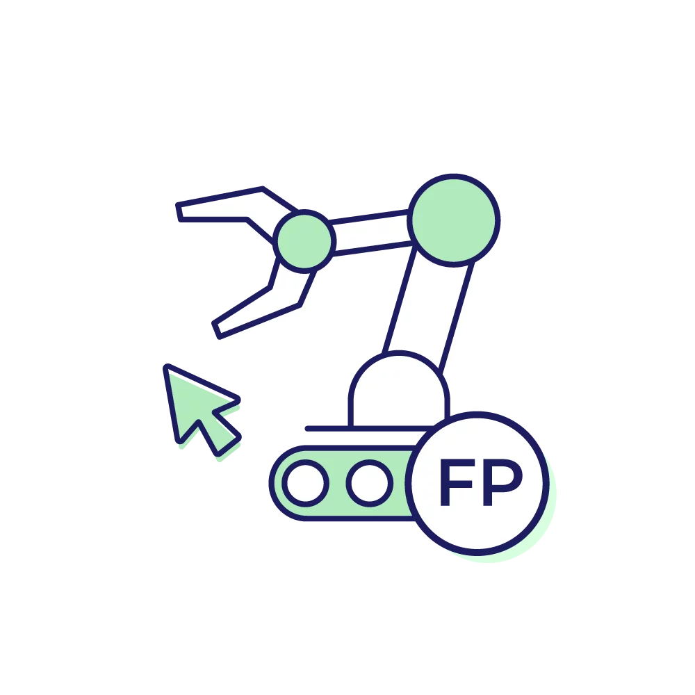
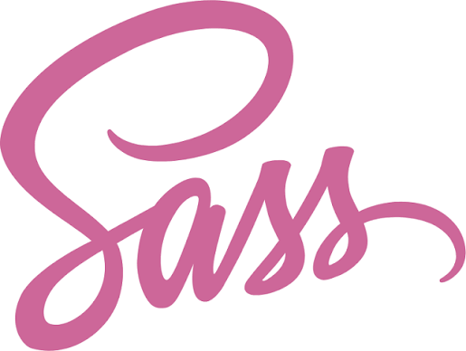

CFGS Desarrollo de Aplicaciones Web 2º Curso
Desarrollo web en entorno servidor
Desarrollo web en entorno cliente

Digitalización aplicada a los sectores productivos
Despliegue de aplicaciones web

Diseño de interfaces web
Sostenibilidad aplicada al sistema productivo